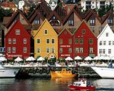

 Города в Норвегии небольшие, самый крупные - это Осло - столица Норвегии с населением около 600 тысяч человек. Также к крупным городам можно отнести Берген, Ставангер, Бодо, Тронхейм, Тромсо. Эти города являются административными центрами в фюльке - норвежских областях.